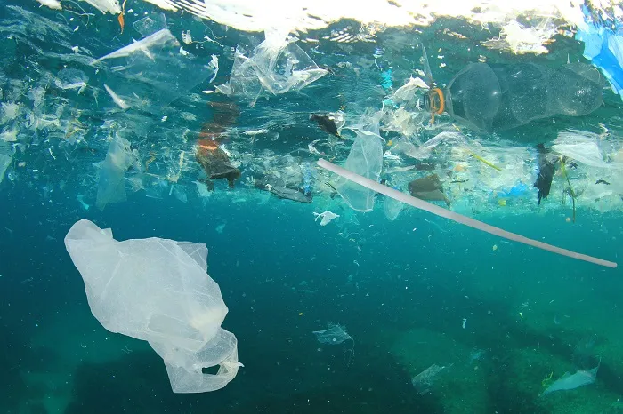
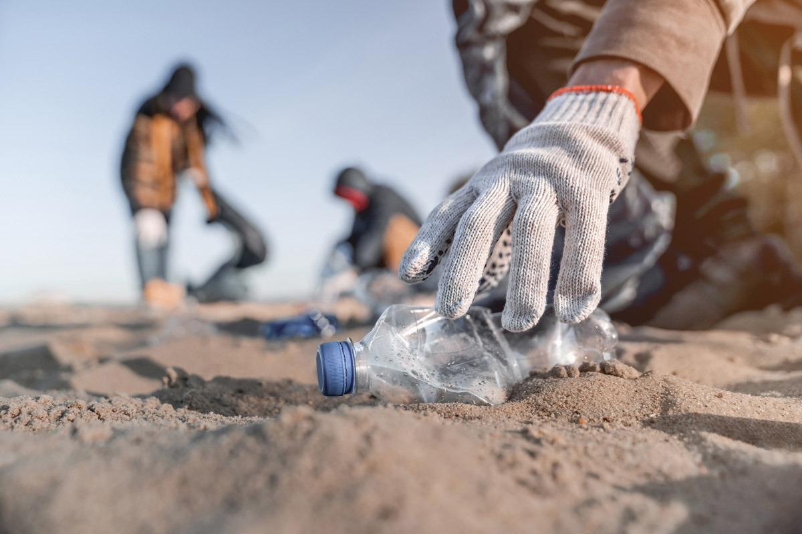
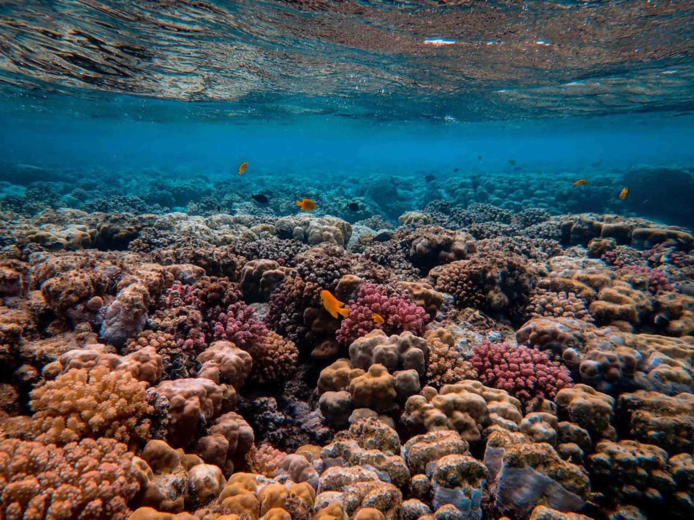

Problema e Solução
Os oceanos enfrentam desafios críticos. Microplásticos e resíduos plásticos afetam a vida marinha. Derramamentos de petróleo causam danos duradouros.
A solução proposta é um sistema de monitoramento de baixo custo e fácil implementação, capturando dados sobre saúde e poluição dos oceanos.

Tecnologia Utilizada
Arduino: Utilizado para montagem e ajuste dos sensores de temperatura e pH, e para transmissão inicial dos dados coletados.
Matplotlib: Biblioteca Python para visualização de dados, criando gráficos simples sobre a saúde dos oceanos e poluição marinha.

Objetivos
O objetivo é desenvolver um sistema de monitoramento marinho acessível. Ele capacita a coleta, processamento e análise de dados sobre a saúde dos oceanos.
Visualizações claras dos dados promovem a conscientização ambiental. Facilita decisões baseadas em evidências para a conservação dos ecossistemas marinhos.
Público Impactado
A solução proposta beneficia organizações ambientais, pesquisadores marinhos e comunidades costeiras. Facilita a monitorização da saúde dos oceanos.
Capacita a tomada de medidas eficazes para a conservação dos ecossistemas marinhos.
Benefícios da Solução
A solução oferece benefícios como acessibilidade financeira e visualização clara de dados. Também promove conscientização ambiental e engaja comunidades locais na preservação dos ecossistemas marinhos.

Impacto no Dia a Dia
O impacto diário é substancial: permite monitoramento acessível e eficiente dos oceanos, incentivando ações proativas contra poluição. Promove conscientização e práticas sustentáveis, contribuindo para um futuro equilibrado.
